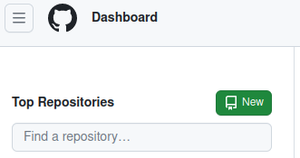
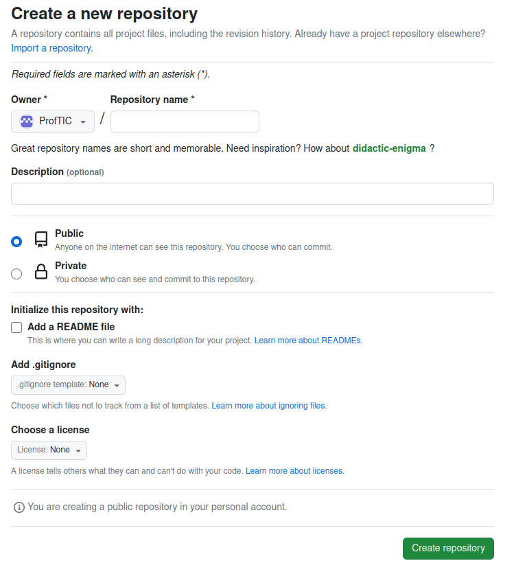
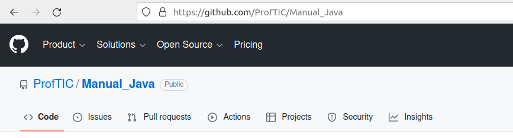
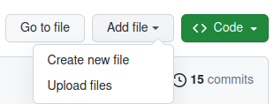
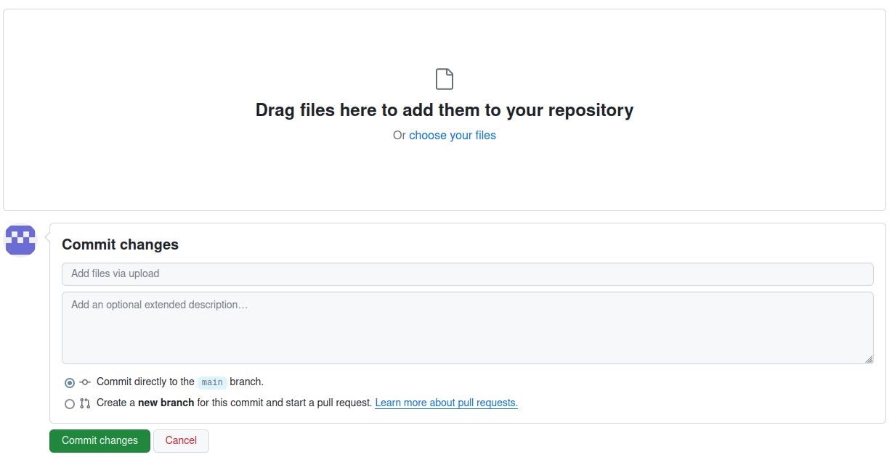

En este manual se explicarán tres elementos básicos del funcionamiento de github:
Proyecto programación y computación - Juego con greenfoot
Anexo. Uso básico de github
Crear un nuevo repositorio en github
- Una vez registrados en github, pulsamos el botón New en la parte izquierda de la ventana

- Rellenamos los datos que se piden en el formulario:

- Seleccionaremos un repositorio público, añadimos un README (en el que se indicará la descripción del proyecto y los componentes del grupo) y elegiremos la licencia que queramos. Si no tenemos claro qué licencia elegir, podemos usar la herramienta que proporciona Creative Commons
- Cuando esté todo elegido, seleccionamos el botón create repository
Obtener el enlace público
Seleccionamos la pestaña code y copiamos la ruta del navegador. Por ejemplo, la ruta del repositorio de la imagen sería https://github.com/ProfTIC/Manual_Java

Subir archivos
Vamos a utilizar la interfaz web de github. Si queremos usar la versión por línea de comandos, podemos seguir las instrucciones de la documentación oficial.
Para subir un archivo, pulsamos el botón add file y se muestran las opciones de la imagen:

Como se puede observar en la imagen, tenemos dos opciones posibles:
- Crear un nuevo fichero, usando la propia herramienta
- Subir archivos desde nuestro equipo. Esta opción será la que usaremos.
Cuando seleccionamos la opción upload files se mostrará la siguiente ventana:

Podemos seleccionar los archivos arrastrándolos desde la carpeta del equipo o bien pulsando la opción choose your files, que mostrará una ventana de selección de ficheros.
Una vez elegidos los archivos, hay que rellenar la parte de commit changes, en la que se indicará una descripción de los cambios realizados en el proyecto. Obligatoriamente hay que incluir una explicación breve, aunque se puede utilizar una descripción más extensa si es necesario. Para confirmar los cambios, solo hay que pulsar el botón commit changes
¿Para qué sirve un commit?
Un commit es la confirmación de un cambio en un repositorio. Cada vez que realizamos un commit, el sistema de control de versiones guarda la instantánea de todos los archivos que componen el proyecto junto con la fecha/hora y un mensaje. En el mensaje se deben describir de forma clara los cambios que se han realizado en los archivos que se están añadiendo. De esta forma, viendo el listado de los commits podremos saber cuántas veces se ha actualizado un proyecto y quién ha realizado esa modificación. Además, los sistemas de control de versiones permiten volver a una versión anterior del proyecto asociada a un commit. Esto es de gran utilidad, ya que se pueden revertir cambios que provocaron errores y volver a una versión estable del software de una manera muy sencilla. Este manual muestra solo el uso básico de github, por lo que no se explicará el procedimiento de deshacer los cambios. Si es necesario, se puede consultar el proceso en esta página
Obra publicada con Licencia Creative Commons Reconocimiento Sin obra derivada 4.0